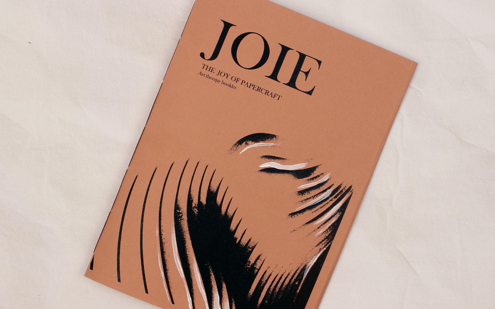
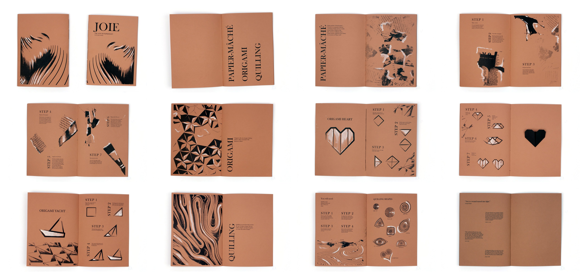
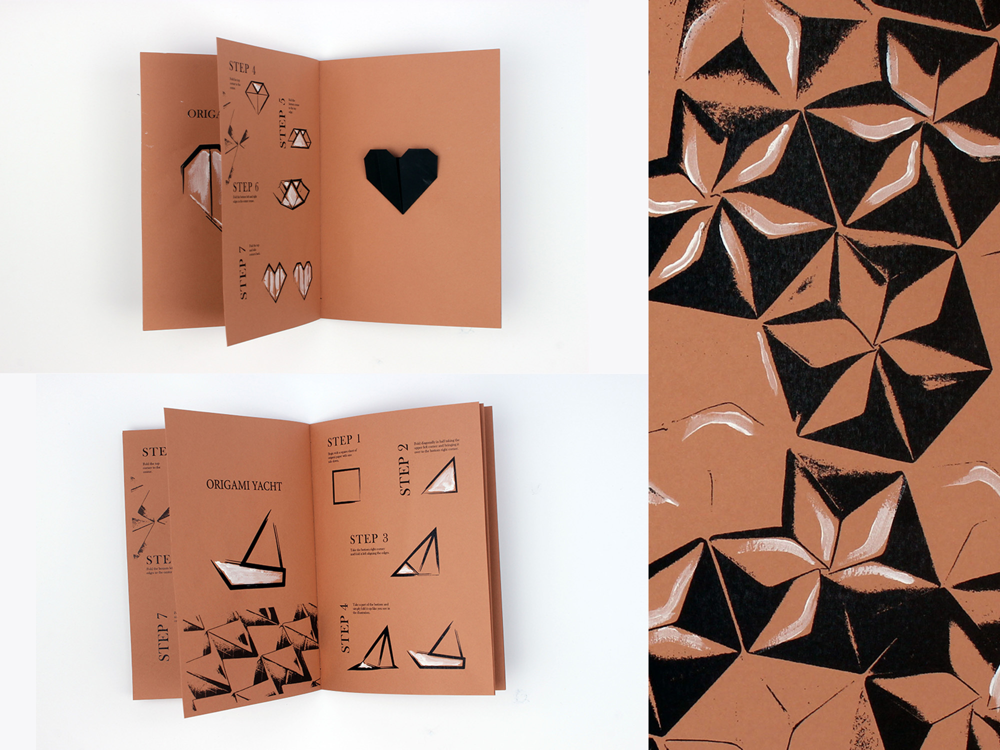
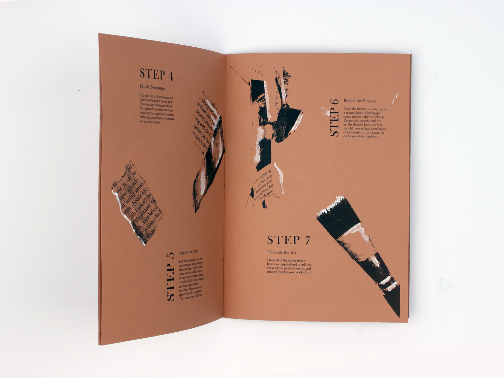
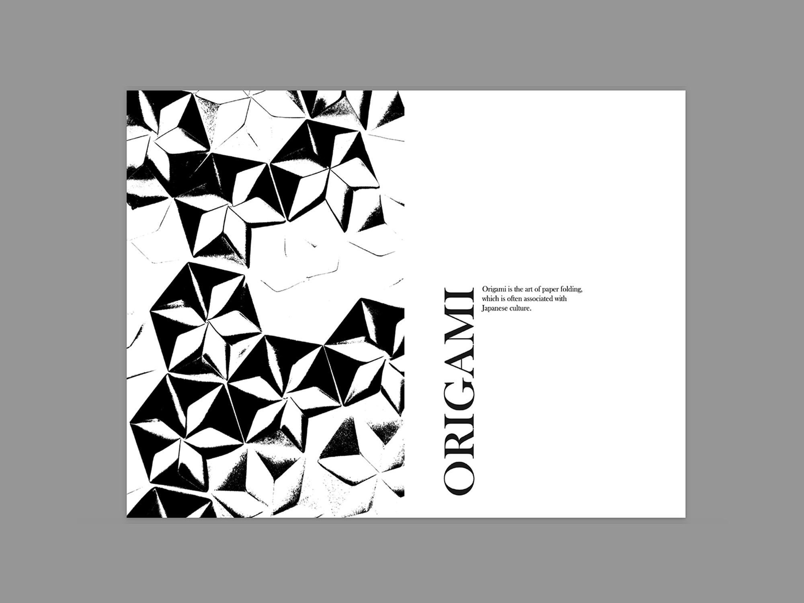
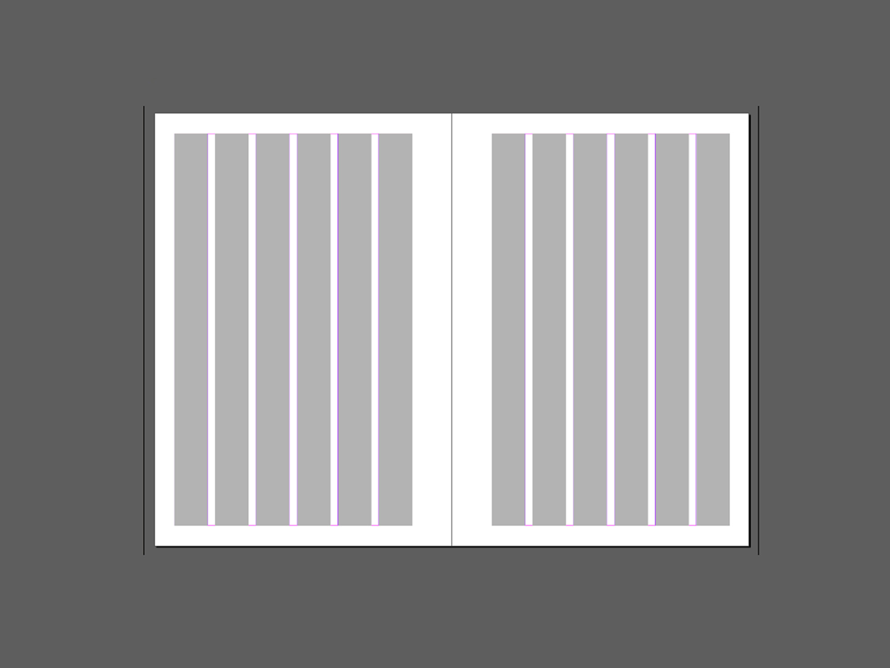

Project type

JOIE is a hand-stitched, hand-painted art therapy booklet that guides readers through papier-mâché, origami and quilling, celebrating the joy of working with paper.
The brief was to play with form, function and materiality to package an object, sense or feeling. I wanted to explore what paper can do and make a booklet that feels like a tactile experience in itself.
Step-by-step instructions sit alongside torn newspaper textures, patterns and painted details in an earthy palette. A 6-column grid and Baskerville Old Face keep the pages easy to follow while leaving room for playful layouts.
The final 148 × 210 mm booklet includes a pocket of origami samples. It showed me how physical processes add character to print, and how people interact with a printed object.





Next project
UX/UI Design, Branding